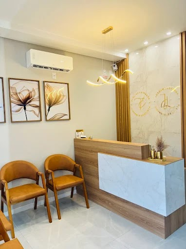
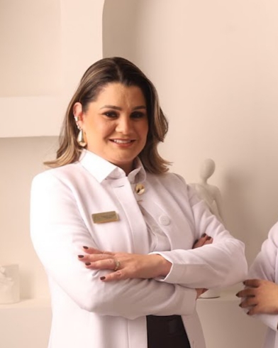
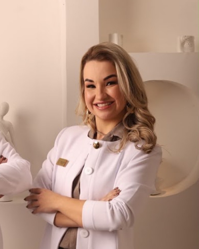

Cuidar do seu sorriso, com calma e atenção.
Consultório odontológico em Guaíba. Atendimento sem pressa, explicando cada etapa antes de começar.

Consultório odontológico em Guaíba. Atendimento sem pressa, explicando cada etapa antes de começar.

Do check-up de rotina ao cuidado mais específico, cada plano é montado depois de uma avaliação.
Consulta inicial, limpeza e orientações para o dia a dia.
Tratamento de cáries e recuperação de dentes com desgaste.
Indicado após avaliação da saúde dos dentes e gengivas.
Alívio da dor e preservação do dente natural.
Ajustes de forma, cor e alinhamento, com naturalidade.
Dor, fratura ou inflamação: fale com a gente para encaixar.
Duas dentistas, um mesmo cuidado com cada paciente.


Você conta o que sente e o que espera. Sem pressa e sem julgamento.
Exame completo da boca, com explicação clara do que foi encontrado.
Você recebe as opções de tratamento, prazos e valores antes de decidir.
Agende uma avaliação pelo WhatsApp e escolha o melhor horário para você.